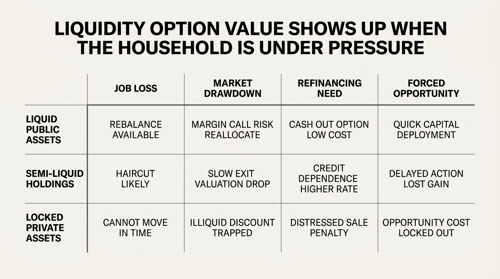

The Illiquidity Premium Myth
Illiquidity can justify extra return in theory. Capital that cannot be sold quickly, rebalanced cheaply, or redirected during stress should usually demand compensation. The myth begins when that theoretical premium is treated as a default property of private assets rather than as a net claim that must survive fees, stale pricing, leverage, structure, and the strategic value of the liquidity that was surrendered.
The sales version is simple: lock your money longer, accept fewer marks, and collect more return. The analytical version is less flattering. Sometimes a real premium exists. Sometimes it is small. Sometimes it is fully consumed by fees and fund structure. Sometimes the apparent premium is mostly leverage, valuation smoothing, or access theater. Sometimes the investor is not being paid a premium at all, but is simply surrendering optionality in exchange for a cleaner narrative.
Core thesis: the illiquidity premium is not a default property of private assets. It is a conditional compensation that may or may not survive after fees, stale marks, fund leverage, adverse selection, and the real utility of liquidity are priced honestly. Investors who treat lock-up itself as evidence of superior return are usually confusing structure with edge.

Where The Idea Comes From
At the theoretical level, the concept is legitimate. Asset-pricing work from Amihud and Mendelson showed that investors require compensation for holding assets with higher trading frictions. If an asset cannot be exited cheaply or quickly, the holder is giving up a real option. That option has value, especially when volatility, refinancing stress, or personal balance-sheet shocks matter. Illiquidity should therefore command a premium under at least some conditions.
The problem is that the theory does not say every private vehicle automatically passes that premium to the end investor. It says someone in the chain may need to be compensated for illiquidity. The practical question is who captures it. Sponsors may capture it through fees. Borrowers or sellers may capture it through pricing power. Early insiders may capture it through access. The final limited partner or household allocator may receive only the story.
Why Private Assets Often Look Better Than They Are
One reason is stale pricing. Private assets are marked less frequently and often through models rather than continuous market clearing. That reduces observed volatility. Lower reported volatility can make Sharpe-like statistics and drawdown profiles appear stronger even when the underlying economic risk has not changed. A smoother NAV is not the same thing as a safer asset. Often it is only a slower mirror.
Another reason is leverage and structure. Private equity and private credit returns often embed financing, covenant design, fee layering, and timing effects that are not cleanly separable from any pure illiquidity premium. A fund may outperform a public benchmark partly because it used leverage, bought smaller companies, accepted operational complexity, or benefited from valuation conventions. Calling the whole spread an illiquidity premium is analytically sloppy.
Fees then absorb a large fraction of whatever spread is actually present. Management fees, performance fees, transaction fees, monitoring fees, and fund-of-funds layering all sit between gross asset performance and investor outcome. If illiquidity theoretically earns two hundred basis points and fees absorb a large share of that, the investor is no longer being paid much to stay trapped. In some cases the investor is paying for the privilege of illiquidity while still assuming the premium exists.
The Household Version Of The Mistake
This is not only an institutional problem. Households make the same error when they assume that harder-to-sell assets deserve a return bonus simply because they are harder to sell. A small private business stake, a second property, a private fund allocation, or concentrated employer equity may all feel premium because they are exclusive or long-dated. But exclusivity is not return. Friction is not return. Lock-up is not return. The only relevant question is whether the net expected outcome is superior after the investor gives up the option to redeploy capital elsewhere.
That last point matters because liquidity has value beyond convenience. Liquidity funds emergencies, improves bargaining position, enables tax planning, and lets investors buy dislocations when others are forced to sell. A liquid balance sheet is not merely low-return dry powder. It is strategic flexibility. When investors compare a private asset's projected IRR to a liquid public benchmark without pricing that flexibility, they understate the hurdle the private asset must clear.
The Evidence Is Mixed, Which Is The Point
Lerner and Schoar's work on private equity found that returns varied materially across investor type, access, and governance. That matters because it implies the premium, where it exists, is not evenly distributed. Sorensen, Wang, and Yang showed how difficult it is to value private equity cleanly against public alternatives because cash-flow timing, leverage, and benchmark choice change the answer. Nadauld and colleagues documented explicit liquidity costs in secondary sales of private equity interests. Those studies support a disciplined conclusion: illiquidity is a real pricing dimension, but realized investor compensation is highly contingent.
This is why the word myth is justified here. The myth is not that liquidity has value. The myth is that illiquidity reliably pays households and allocators for sacrificing it. That stronger claim is asserted far more confidently than the evidence supports. A conditional, competed-away, structure-sensitive premium is not the same thing as a standing asset-class advantage.

Why The Premium Can Disappear In Crowded Markets
If too much capital chases the same private deals, competition compresses the very spread investors expect to harvest. This is basic market logic. A scarce premium can survive when few buyers can bear the lock-up, complexity, or sourcing burden. As more institutions and wealthy households crowd in, sellers gain bargaining power and managers can charge for access. The premium then migrates away from the allocator even while the sales language stays intact.
That compression is especially relevant when private assets are marketed as a durable substitute for public-market discipline. Once an asset class becomes fashionable, the investor may be paying for scarcity theater rather than being paid for actual illiquidity. A premium that was once genuine can become a fee pool or a valuation habit.
What A Serious Allocator Should Ask Instead
- What is the likely net premium after all fees? Gross return stories are nearly useless if structure absorbs the spread.
- How much of the apparent stability is only stale pricing? Low reported volatility is not proof of low economic risk.
- What flexibility is being forfeited? The lost option to rebalance, meet shocks, or buy better assets later has to be priced.
- Is the premium due to illiquidity or something else? Small-company exposure, leverage, governance work, or complexity may be doing the real work.
- Who captures the premium first? The sponsor, the borrower, the seller, and the allocator do not receive the same economics.
These questions move the analysis from category labels to actual balance-sheet consequences. A good private asset may still be worth owning. The point is that the justification must be specific. If the case reduces to private equals illiquidity and illiquidity equals premium, the analysis is weak.
Known, Inferred, And Unknown
| Category | Assessment |
|---|---|
| Known | Liquidity has economic value, and financial theory supports the idea that harder-to-trade assets may require compensation. |
| Known | Observed private-asset outperformance is difficult to attribute cleanly because fees, leverage, valuation smoothing, selection, and benchmark choice all affect the result. |
| Known | Secondary transactions and forced exits show that illiquidity can impose real costs exactly when optionality matters most. |
| Inferred | In crowded private markets, a material share of any genuine illiquidity premium is often captured by sponsors or sellers before it reaches the end investor. |
| Unknown | How large the true net illiquidity premium is across specific private-market segments once fee drag, leverage, and liquidity-option adjustments are standardized. |
The Practical Correction
The correction is simple but demanding. Treat illiquidity as a cost first and a premium only after evidence. A private asset must beat the liquid alternative by enough to cover fees, complexity, tax frictions, and the value of optionality that was surrendered. If it cannot clear that hurdle, the investor is not harvesting a premium. The investor is volunteering to be locked.
This is why the topic belongs beside The Liquidity Illusion and The Cost-of-Capital Trap. All three describe the same structural mistake from different angles: investors keep pricing capital as though access, timing, and optionality were secondary. They are not secondary. They are often the entire trade.
Further Reading Inside The Site
This article connects directly to The Liquidity Illusion, The Cost-of-Capital Trap, and The Asset-Rich, Cash-Poor Paradox. Together they show why wealth depends not only on asset value, but on access, timing, and balance-sheet flexibility.
Source List
Amihud Y, Mendelson H. Asset Pricing and the Bid-Ask Spread. Journal of Financial Economics. 1986.
Lerner J, Schoar A. The Illiquidity Puzzle: Theory and Evidence from Private Equity. NBER Working Paper 9359. 2002.
Sorensen M, Wang N, Yang J. Valuing Private Equity. NBER Working Paper 19317. 2013.
Nadauld TD, Sensoy BA, Vorkink K, Weisbach MS. Liquidity and Valuation in Private Equity. NBER Working Paper 22074. 2016.
Robinson DT, Sensoy BA. Cyclicality, Performance Measurement, and Cash Flow Liquidity in Private Equity. Journal of Finance. 2013.